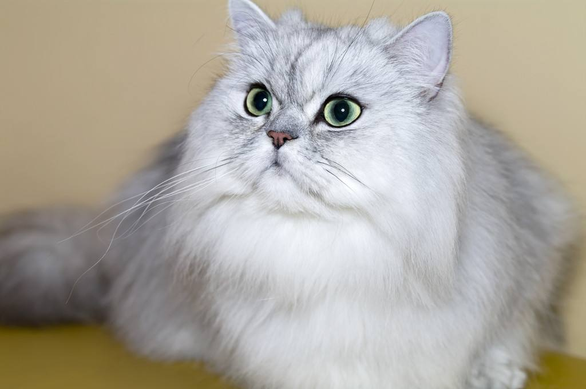

猫猫图书馆
猫猫图书馆
波斯猫（Persian cat）是以阿富汗的土种长毛猫和 土耳其的安哥拉长毛猫为基础，在英国经过100多年的选种繁殖，于1860年诞生的 一个品种。波斯猫是最常见的长毛猫，波斯猫有一张讨人喜爱的面庞，长而华丽的 背毛，优雅的举止，故有“猫中王子”、“王妃”之称，是世界上爱猫者最喜欢的纯种 猫之一，占有极其重要的地位。
|
|
|---|---|
|
 波斯猫（Persian cat）是以阿富汗的土种长毛猫和 土耳其的安哥拉长毛猫为基础，在英国经过100多年的选种繁殖，于1860年诞生的 一个品种。波斯猫是最常见的长毛猫，波斯猫有一张讨人喜爱的面庞，长而华丽的 背毛，优雅的举止，故有“猫中王子”、“王妃”之称，是世界上爱猫者最喜欢的纯种 猫之一，占有极其重要的地位。 |
|
| 版权所有© LHT | |